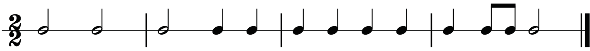
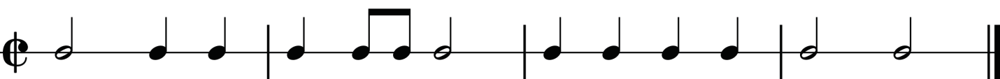
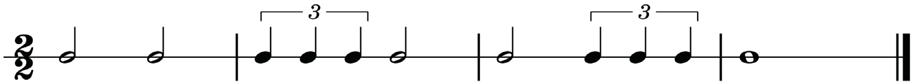
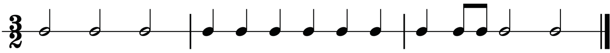
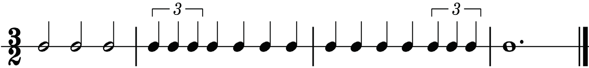
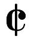

A two-two time signature: This can also be represented by a symbol known as alla breve or cut-time. A two-two time signature means that there are two minims in a bar. In a two-two time, the value of one beat is regarded as a minim. Figures 1.11 to 1.13 show examples of rhythms in two-two time.



A three-two time signature: This time signature shows that there are three minims in a bar. In a three-two time, the value of one beat is also regarded as a minim. Figures 1.14 and 1.15 show examples of rhythms in three-two time.


A four-two time signature: This time signature shows that there are four minims in a bar. In a four-two time, the value of one beat is regarded as a minim as well. Figures 1.16 and 1.17 show examples of rhythms in four-two time.
